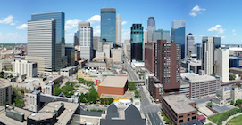

A large metropolitan area, Minneapolis–St. Paul, is built around and split by the Mississippi River in east central Minnesota.
This area is commonly referred to as the Twin Cities because of its two largest cities, Minneapolis, the city with the largest population in Minnesota, and its neighbor, St. Paul, the state capital.
While Minneapolis–St. Paul are given the nickname the Twin Cities, the two are actually quite different, independent from one another, and have well‐defined borders.
Minneapolis is located on the west side of the Mississippi River and is considered to be more modern than St. Paul, which sits on the eastern side of the Mississippi River.

Image of Minneapolis by Bobak Ha'Eri, CC BY 3 .0, via Wikimedia Commons
[2]
Image of St. Paul by Carl Clifford, via Wikimedia Commons
[1]